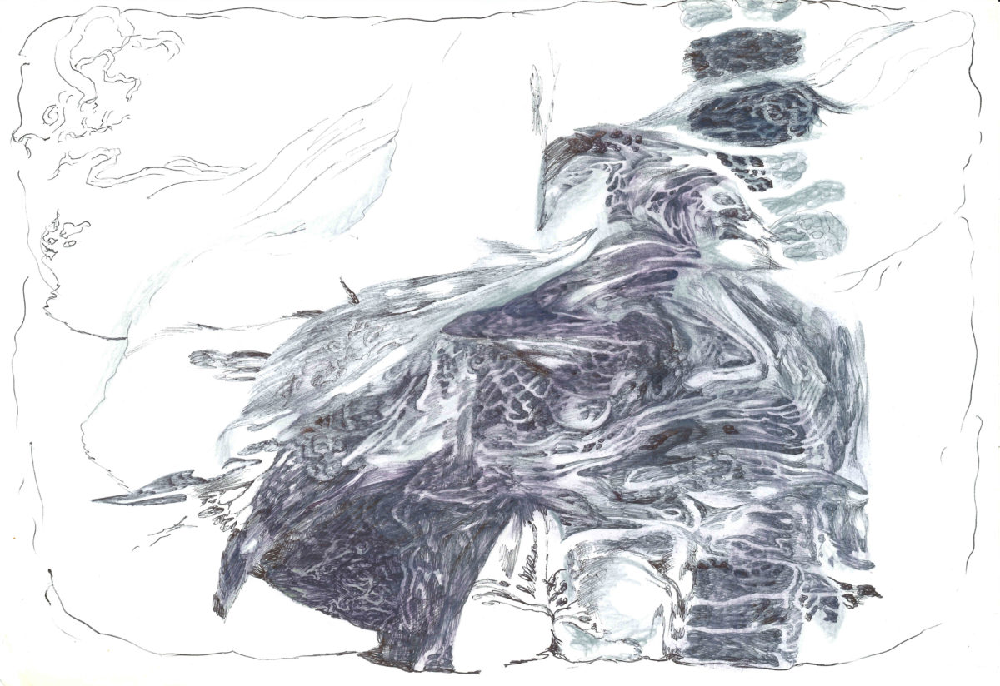
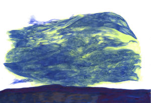
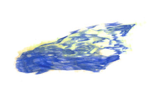
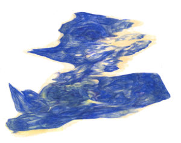
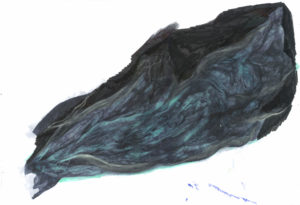
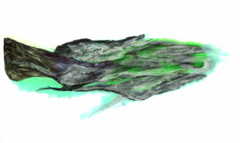
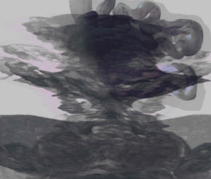

Scienceground 8/5 – SCARTI

Un progetto di eXtemporanea per Festivaletteratura
Mantova 8-12 Settembre 2021
«No single organism can cycle its own waste»
Lynn Margulis
Il viaggio collettivo negli ecosistemi della carovana di Scienceground 1.6666… ci ha rese più consapevoli del significato di Antropocene: non c’è continente al mondo, catena alimentare, rete metabolica o processo geochimico in cui non si scorga un’interazione con le attività antropiche. L’ecosistema fluviale di Mantova ne è una sintesi perfetta: l’immensa cartiera e le microplastiche, l’eredità millenaria della gestione delle acque e quella recente dell’inquinamento industriale. La geologia del futuro — se ancora ci sarà! — potrà definire la nostra era sulla base degli scarti che ci lasciamo dietro. Plastiche, cemento, scorie radioattive e ossi di pollo saranno quello che sono stati i fossili per noi? Di questo si occuperà Scienceground 8/5: Scarti.
Guardare all’umanità come attrice ecosistemica, spingersi oltre l’antropocentrismo, scartare la dicotomia fra Natura e Cultura dal mazzo dei tarocchi con cui interroghiamo la realtà saranno alcuni degli esercizi quotidiani nello spazio di Scienceground 8/5.
Illustrazioni di Alberto Motolese, realizzate con soli materiali di scarto di un magazzino Amazon (penne, evidenziatori, fogli con buchi per anelle dei registri contabili) ed elaborate digitalmente.

LIBERE LETTURE
Ogni anno eXtemporanea seleziona alcuni libri (romanzi, saggi, pubblicazioni scientifiche) che ben si prestano ad una discussione sul ruolo sociale della scienza. Partendo da passaggi selezionati, ospiti e pubblico li discutono insieme alla ricerca di nuove e soprattutto libere letture. Non preoccupatevi: non è assolutamente necessario aver letto il libro in anticipo.
Storia di un futuro profondo
Mercoledì 8, ore 19.30, Tenda dei Libri di Piazza Sordello
L’età dell’esplorazione sembra passata. Del resto, nell’epoca delle immagini satellitari e dei big data, cosa resta da scoprire?
La perlustrazione del pianeta, portata avanti dalle potenze coloniali, consentì alle scienze naturali dell’Ottocento di realizzare un poderoso avanzamento nella conoscenza della storia del mondo. La formazione delle montagne, la deriva dei continenti, l’esistenza dei dinosauri.
La superficie della Terra è quindi ormai mappata. Ma non è mappato ciò che giace sotto la superficie. Il sottosuolo.
In Underland: un viaggio nel tempo profondo (Einaudi, 2020), lo scrittore Robert MacFarlane ci accompagna in prima persona attraverso cunicoli carsici, città sotterranee, fondali di ghiacciai e altro ancora. Questa esplorazione porta alla luce l’antropocene che si cela sotto i nostri piedi.
Approfondiremo la storia del nostro rapporto con il sottosuolo discutendo passaggi selezionati di questo libro, per capire come le scienze naturali, che hanno costruito la nostra interpretazione della natura nel corso dell’Ottocento — grazie alla comprensione della profondità del passato — siano sul punto di farlo ancora.
Questa volta però, esse sono lanciate in avanti, a sondare la profondità del nostro futuro.
Frankenstein, una storia fraintesa
con Dario De Santis
Giovedì 9, ore 19.30, Tenda dei Libri di Piazza Sordello
Quando parliamo del Frankestein pensiamo solitamente a un racconto dell’orrore fantascientifico che parla di un “mostro” creato in laboratorio da scarti umani. Questa idea è però plasmata più sulle versioni cinematografiche della storia che non sul romanzo scritto all’inizio dell’Ottocento da Mary Shelley. Al cinema, infatti, la trama fu cambiata e finì per stravolgere il significato originale del romanzo di Mary Shelley, complici più di 100 anni in cui scienze e società sono mutate radicalmente. Pur essendo uno dei libri più famosi del mondo, Frankenstein o Il moderno Prometeo rimane frainteso. Vogliamo riscoprirne il significato e le influenze culturali, che affondano radici nella Londra degli esperimenti scientifici di Humphry Davy e Giovanni Aldini: era l’inizio del 1800 e prendeva forma la concezione moderna di Natura.
Lo faremo leggendo e commentando insieme alcuni estratti selezionati del romanzo, passandolo sotto le lenti della filosofia e della storia della scienza per capire cosa ha ancora da insegnarci.
Tracce, scarti, lupi, sciamani
con Marco Inguscio
Venerdì 10, ore 12.00, Tenda dei Libri di Piazza Sordello
“In una compostiera c’è dello sciamanesimo nascosto”: così scrive il filosofo Baptiste Morizot in Sulla pista animale (Nottetempo, 2020). È vero? Una società umana chiusa prende il cibo da quella che chiama natura e quello che resta diventa uno scarto. In una compostiera invece lo scarto alimenta altre vite non umane. Così accade per gli sciamani siberiani che, consapevoli di morire, si abbandonano alla foresta, per nutrirla e restituire quanto preso.
Come ritrovare questo rapporto con le altre vite non umane e con l’ambiente, la foresta là fuori, che chiamiamo natura? Morizot in Sulla pista animale va letteralmente all’inseguimento delle vite animali, dietro le loro tracce, partecipando a spedizioni scientifiche, accampato nei boschi o percorrendo crinali sopra cavalli kirghisi. Sulla pista animale diventa così un diario, un racconto di viaggio e di avventura che ci interroga sull’abilità ancestrale dell’uomo di seguire tracce, di immedesimarsi nell’animale che le lascia, e di attraversare la foresta, la casa di altri, lupi e grizzly.
Seguiremo le piste tracciate dal libro con Marco Inguscio (IULM di Milano).
Si può volare con il 5% di un’ala?
con Giuseppe Longo e Alessandro Sarti
Sabato 11, ore 12.00, Tenda dei Libri di Piazza Sordello
No! Allora come si sono sviluppate le ali degli uccelli?
È difficile spiegare questi arti se supponiamo che si siano evoluti per il volo. Forse le proto-ali servivano alla termoregolazione, o alla caccia agli insetti.
Raccogliendo un dubbio di Darwin sull’impossibilità di generare nuovi organi e funzioni in maniera graduale, negli anni ’80 Gould e Vrba introdussero il concetto di exaptation, un processo evolutivo di cooptazione di caratteri inutili, o adattati a funzioni diverse.
Per comprendere la radicalità di questa proposta teorica leggeremo Exaptation. Il bricolage dell’evoluzione (Bollati Boringhieri, 2008). A guidarci nelle nuove logiche evoluzioniste dello “scarto”, contingente e non teleologico, saranno Giuseppe Longo (emerito ENS Parigi) e Alessandro Sarti (EHESS Parigi).
Per partecipare alla conversazione sarà attivo il canale Telegram …

ACCENTO
Scarti conoscitivi
con Enrico Milazzo e Pietro Autorino per il Collettivo Epidemia
Mercoledì 8 ore 21.00, Tenda Sordello – ingresso gratuito con prenotazione
Cosa si scarta quando si decide di ignorare una questione, invece che affrontarla? La scelta di non praticare questa strada non è solo un rifiuto, ma una risorsa da mettere da parte. Forse utile per ri(com)pensare l’ecologia.

LAVAGNE
Geoingegneria crash course
eXtemporanea
Giovedì 9 ore 18:30, sagrato della rotonda di San Lorenzo – ingresso gratuito con prenotazione
L’ingegneria climatica, o “geoingegneria”, ha lo scopo di elaborare soluzioni tecnologiche su scala planetaria volte ad arginare la crisi ecologica. Ma è davvero possibile controllare il clima? Modificare la temperatura potrebbe alterare impevedibilmente la frequenza di eventi estremi come onde di calore e uragani. In questa lavagna indagheremo presupposti e conseguenze degli interventi geoingegneristici.
Vivere dopo la Terra o vivere nella Terra?
Paolo Missiroli
Venerdì 10 ore 19:00, sagrato della rotonda di San Lorenzo – ingresso gratuito con prenotazione
L’ingegneria climatica, o “geoingegneria”, ha lo scopo di elaborare soluzioni tecnologiche su scala planetaria volte ad arginare la crisi ecologica. Ma quali sono i presupposti di questa visione e le sue conseguenze? Siamo sicuri che sia la via migliore per uscire dalla crisi ecologica? La filosofia può aiutarci a rispondere a queste domande.
Cosa scompare insieme al ghiaccio
Giovanni Baccolo
Sabato 11 ore 18:30, sagrato della rotonda di San Lorenzo – ingresso gratuito con prenotazione
I ghiacciai e il loro ritiro sono una delle più potenti ed emotive manifestazioni della crisi ecologica. Chi può rimanere indifferente davanti ai grafici che mostrano il drastico declino che i ghiacciai di tutto il pianeta stanno vivendo? Perdere il ghiaccio significa anche perdere molto altro, da forme di vita ancora sconosciute a una preziosa fonte di acqua. Senza dimenticare che insieme ai ghiacciai se ne va una componente fondamentale del paesaggio di montagna e della cultura alpina.
Geoingegneria Fantastica
Simona Micali
domenica 12 ore 12:00, sagrato della rotonda di San Lorenzo – ingresso gratuito con prenotazione
L’ingegneria climatica, o “geoingegneria”, ha lo scopo di elaborare soluzioni tecnologiche su scala planetaria volte ad arginare la crisi ecologica. È un ambito in cui il confine tra letteratura scientifica e fantascientifica si rivela difficile da tracciare, tra immaginari e tecnologie che si alimentano vicendevolmente. Come spesso accade, là dove l’umanità non si è ancora spinta, la fantasia si è già mossa in esplorazione. Cosa ha trovato?

LABORATORI
I laboratori di Scienceground sono realizzati in collaborazione con: Università di Parma; Institute for Frontier Materials, Deakin University (Victoria, Australia); The ARC Research Hub for Future Fibres; Labter-Crea Rete di Scuole Mantova & GLOBE Italia; AUGMAN – Arduino User Group MANtova; Master in Giornalismo e Comunicazione Istituzionale della Scienza – Università di Ferrara; Istituto Superiore E. Fermi (Mantova); Istituto Superiore A. Mantegna (Mantova); Istituto Superiore A. Manzoni (Suzzara); Istituto Superiore Carlo D’Arco ed Isabella d’Este (Mantova); Liceo Artistico Giulio Romano (Mantova).
Non dire “microplastica” se non ce l’hai… nel filtro!
con Alessandra Sutti, Stuart Robottom, Sandro Sutti
Laboratorio a puntate rivolto ad adulti e ragazzi dai 14 anni in su – giovedì, venerdì e sabato 10:00-12:30, spazio Zanzara
A Scienceground 1.666… abbiamo scoperto nuove “presenze” che popolano il Mincio e le acque di fiumi, laghi e mari: le microplastiche! In questo laboratorio a puntate costruiremo un vero e proprio progetto di ricerca per individuare, campionare (secondo il protocollo sviluppato l’anno scorso) e comunicare i risultati ottenuti. Scopriremo che non sempre è banale definire un oggetto scientifico, trovare i metodi giusti per studiarlo e discutere con pubblici diversi le proprie ricerche.
Nota: Il laboratorio a puntate è un’attività che si sviluppa, nel suo complesso, nell’arco dei tre incontri. Per vivere l’esperienza completa è quindi preferibile partecipare a tutti e tre gli incontri. E’ comunque possibile partecipare ai singoli laboratori.
Giorno 1: ALLA RICERCA DELLE MICROPLASTICHE
Giovedì 09/09, ore 10:00-12:30, La Zanzara
Entrando nei panni di un gruppo di scienziati/e pianificheremo una vera attività di ricerca.
Partendo dal fare la conoscenza delle microplastiche, definiremo obiettivi, metodologie e dinamiche della nostra indagine scientifica.
Poi subito in campo, lungo le sponde del Mincio, a raccogliere campioni d’acqua e in laboratorio a filtrarli…pronti per essere osservati al microscopio per vedere, con i nostri occhi, cosa si nasconde oltre i limiti del visibile. Cosa riusciremo a vedere?
Giorno 2: FIUME, ALGA O NASTRO DI PLASTICA?
Venerdì 10/09, ore 10:00-12:30, La Zanzara
Diffuse in ogni ecosistema, spesso difficili da vedere e riconoscere, le microplastiche amano anche nascondersi e confondersi con residui e particelle biologiche. In questa giornata esploreremo i confini tra naturale e artificiale analizzando i campioni raccolti nella giornata precedente e proveremo a interpretare e sintetizzare i dati ottenuti. Quante microplastiche ci sono nel Mincio? È ancora un fiume o già un nastro sintetico?
Giorno 3: CONDIVIDERE LE SCOPERTE
Sabato 11/09, ore 10:00-12:30, La Zanzara
I risultati non sono la conclusione della ricerca. Una volta ottenuti, perchè siano davvero utili, devono essere condivisi e comunicati in maniera corretta.
Ma comunicati a chi? E come?
In questo laboratorio raccoglieremo i risultati scientifici della ricerca svolta nei giorni precedenti e, con l’aiuto di persone che si occupano di comunicazione della scienza, realizzeremo alcuni prodotti rivolti alla comunità scientifica, alle istituzioni e alla cittadinanza.
E scopriremo come, a seconda del pubblico, cambiano i linguaggi, le dinamiche e le finalità stesse della comunicazione.
Ecosistemi circolari in guscio di vetro – laboratori brevi
PER FARE UN MONDO, CI VUOLE UN VASO, PIENO DI…?
giovedì 09/09 e sabato 11/09, ore 15:00-16:30, La Zanzara, dai 6 anni in su, numero massimo di partecipanti: 20
Insieme a bambini e bambine dai 6 anni in su, costruiremo piccoli ecosistemi in bottiglia, scoprendone gli ingredienti necessari, quelli futili ma utili, quelli dannosi per la realizzazione di sistemi stabili.
DAMMI UN SENSORE… E TI MISURERO’ IL MONDO?!
venerdì 10/09 e sabato 11/09, ore 17:00-18:30, La Zanzara, dai 15 anni in su, numero massimo di partecipanti: 20
Insieme a ragazzi e ragazze dai 15 anni in su, e in collaborazione con Arduino User Group MANtova (AUGMAN), capiremo cosa significa ‘misurare’, quali parametri possono aiutarci a ricercare un concetto di rifiuto in natura e costruiremo sensori appropriati allo scopo.
CONDUZIONE: AUGMAN-Arduino User Group MANtova ed eXtemporanea
ECOSISTEMI IN BOTTIGLIA
Laboratorio permanente
attività permanenti da giovedì 10 a sabato 12 dalle 10:00 alle 19:00 presso lo Zanzara (lungolago superiore)
I processi biogeochimici che plasmano gli ecosistemi e che oggi si stanno inevitabilmente modificando hanno luogo nell’arco di tempi molto lunghi. Anche chi si nutre di scarti ha bisogno di tempo per riconoscervi una nuova risorsa. La difficoltà sperimentale nello studio dell’ecologia non sta solo in queste tempistiche, ma anche nella possibilità di scegliere e monitorare tantissime variabili. Nello spazio di Scienceground, verranno mostrati e commentati gli ecosistemi “in bottiglia” attivi e misurati già dall’estate, per mostrare e discutere la complessità di queste osservazioni, anche in relazione a quelle fatte col pubblico dei laboratori brevi.
CONDUZIONE: eXtemporanea in collaborazione con gli studenti delle scuole che collaborano al progetto

ATTIVITÀ PERMANENTI
Scarti di traduzione
Le mie previsioni sono queste: ogni lingua si concentrerà attorno a due poli: un polo di immediata traducibilità nelle altre lingue con cui sarà indispensabile comunicare, tendente ad avvicinarsi a una sorta di interlingua mondiale ad alto livello; e un polo in cui si distillerà l’essenza più peculiare e segreta della lingua, intraducibile per eccellenza, e di cui saranno investiti istituti diversi come l’argot popolare e la creatività poetica della letteratura.
Italo Calvino, L’antilingua, Il Giorno (1965)
Le parole costruiscono mondi e il linguaggio è una delle grandi forze geologiche dell’Antropocene.
Robert MacFarlane, Underland, pag. 98
ma oggi è un giorno a zìmpani e zirlecchi
un giorno tutto gnacchi e timparlini,
le nuvole buzzìllano, i bernecchi
ludèrchiano coi fèrnagi tra i pini;Fosco Maraini, Il giorno ad urlapicchio
Dove stiamo andando, noi e l’Antropocene? Partendo dal tema di quest’anno — “scarti” — a Scienceground ci interrogheremo anche sul linguaggio, cimentandoci in una della attività umane che produce scarti in maggior quantità: la traduzione.
La nostra proposta nasce dall’osservazione di due travolgenti fenomeni del nostro tempo. Da un lato il predominio della lingua inglese, utilizzata come interlingua mondiale ad alto livello con sempre maggiori pretese di neutralità e universalità. Dall’altro il crescente utilizzo di software di traduzione automatica basati su algoritmi che sembrano sempre più intelligenti.
Tutto questo – crediamo – rende doverosa una discussione sulla portata che queste tendenze hanno o avranno sul linguaggio e il nostro modo di utilizzarlo. Dobbiamo reagire? Dobbiamo assecondare? Noi proponiamo di giocare!
Lo faremo usando la nostra creatività, cercando di sfruttare al meglio le potenzialità della nostra lingua per (ri)tradurre parole legate ai temi che verranno affrontanti durante Festivaletteratura 2021. Abbiamo scelto parole inglesi che generalmente non vengono tradotte, forse perché l’inglese suona più immediato e autorevole, o forse perché non si trovano alternative efficaci. Le troveremo noi?
Fantasticando intorno a termini come greenwashing, data mining e drosscape, inviteremo chi ci verrà a trovare a mettere in luce le varie fasi e logiche del processo traduttivo, ricercando insieme soluzioni fuori dalla portata di qualunque algoritmo. Il gioco starà nello scoprire connessioni, valutare opposizioni e – soprattutto! – suggerire scarti di significato.
Insieme prenderemo coscienza delle motivazioni che ci spingono a scartare alcune parole in favore di altre e, alla fine, convincerci della validità di tali motivazioni, realizzando che una buona traduzione non passa solo attraverso la correttezza linguistica, ma la traduzione è un attività sociale.
Queste riflessioni ci hanno portato anche a un’altra curiosità: cosa succede se inseriamo in un programma di traduzione automatica una frase composta di parole inventate, ma senza specificare la lingua di partenza? Il traduttore si accorge che si tratta dell’italiano proprio nel momento in cui aggiungiamo alle parole dei suffissi, oppure quando mettiamo gli elementi in un ordine che ci appare coerente: come è possibile?
Per rispondere vogliamo coinvolgere i migliori software in circolazione, così raffinati da stare nelle piccole teste delle bambine e dei bambini: insieme a loro scomporremo e ricomporremo alcune poesie tratte dalla Gnosi delle fanfole di Fosco Maraini, per provare a riconoscere i diversi strati di cui è fatto un testo e ridando vita anche a quelli che ci sembrano scarti discorsivi. Alla fine potremmo addirittura scoprire come è fatto un Lonfo, perché la nostra lingua a volte ci appare smegia e lumbidiosa, invece sa essere tutta gnacchi e timparlini!

VIA FLUMINIS
Camminata tematica – Venerdì 10/09 ore 16:00-19:00 e Domenica 12/09 ore 10:00-13:00 (ritrovo presso Porto Catena)
Alla scorsa edizione, la via Fluminis ci ha portato alla scoperta di quanto “naturale” e “artificiale” si intreccino nell’ecosistema dei laghi di Mantova. Proseguiamo il percorso lungo le rive di queste acque alla ricerca di scarti: industriali, inquinanti, reperti storici e artistici. Da Porto catena, già cuore delle attività produttive di Mantova, passando per la vecchia fabbrica di ceramica in cerca di reperti industriali, arriveremo a Campo Canoa passando per l’impianto petrolchimico, le cui tracce sono sparse in tutta l’area, tanto da farlo dichiarare sito di interesse nazionale (SIN). Si tratterà di un percorso di circa 4,5 km, in circa 3 ore, nel pieno rispetto delle norme sanitarie, come testato già l’anno scorso.
Ci aiuteranno a raccontare il rapporto tra le acque, i paesaggi, le storie umane e non-umane Emanuele Bellintani, storico, autore di Terra non guerra e vari ricercatori e ricercatrici impegnate negli aspetti di studio, biorisanamento e recupero delle zone industriali.
Nota: Da Campo Canoa è attivo un servizio di bus-navetta gratuito verso il centro città.